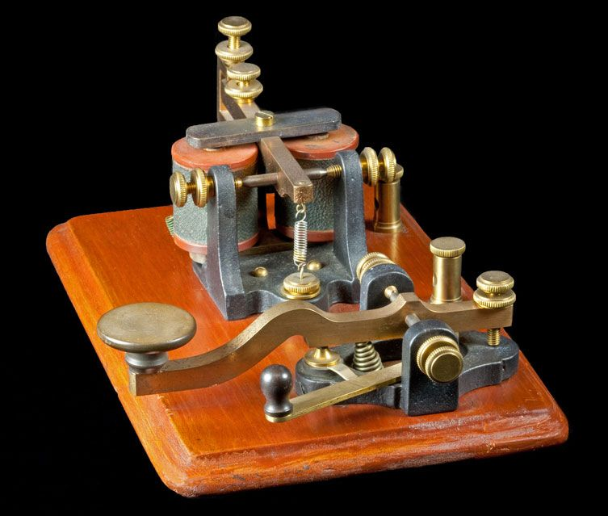

BSc Information Technology · Pentecost University
I am a Level 200 student at Pentecost University, pursuing my degree with a deep passion for technology and data communication. My academic journey has been shaped by curiosity — a drive to understand not just how systems work, but why they matter.
Dedication and determination are not just words I use — they define how I approach every assignment, every challenge, and every opportunity to grow. I set clear goals and pursue them relentlessly, refusing to let obstacles become excuses. Whether it is mastering complex networking concepts or developing practical technical skills, I bring full commitment to everything I do.
My ambition is to become a highly skilled IT professional who contributes meaningfully to Ghana's digital transformation — and beyond. Every semester is a step closer to that goal.
A structured overview of all topics covered in the Data Communication course this semester.
What is Data Communication?
Data communication is the process of transferring data between two or more devices through a transmission medium. For communication to occur, there must be a sender, receiver, message, transmission medium, and protocol.
PGP is an encryption programme that provides cryptographic privacy and authentication for digital communications. It is widely used for securing emails and files.
Satellite communication relays signals between distant points on Earth via orbiting spacecraft, enabling global coverage beyond terrestrial networks.
The electric telegraph was a 19th-century invention that transmitted coded messages over long distances through electrical pulses in a wire. A telegraph key made and broke the circuit to form signals; operators at the receiving end decoded clicks into text.
Morse Code represents letters and numbers as combinations of short (·) and long (–) signals — dots and dashes.
Below are the assignments submitted during the semester. Click the document to open it, and upload your image assignment below.
Click the file below to open in a new tab
Data Communication · Semester Work
📎 Click the document icon above to open and review the full assignment.
Add your assignment image below
